是时候对数进行划分，以解决数学问题了。一个简单的划分技巧能把大数都转化成小很多且简单很多的数。取模运算正是运用这一技巧把所有的数字都划分成不同的类。
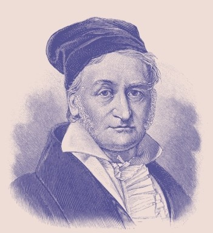
卡尔·弗里德里希·高斯被誉为数学王子。
取模运算是由数学大师卡尔·弗里德里希·高斯引入的，或者至少是他起的名字。这个德国人是整个数学史上最重要的人物之一。他在许多领域做出了重大发现，其中包括帮助证明了（在非欧几何中）直线可能是弯曲的！高斯也是一位天文学家。1801年，他协助定位谷神星，这也是目前发现的第一颗小行星。（谷神星其实很大，大概与美国一样宽广，现在谷神星被归为矮行星。）高斯曾是一个儿童歌手，青少年时期就已经有了不少的发明。他24岁时在小行星定位上取得了成就。同年，他还出版了《算术研究》，这本书可能是自2000多年前的《几何原本》（见第59页）之后关于数字的最具影响力的图书。
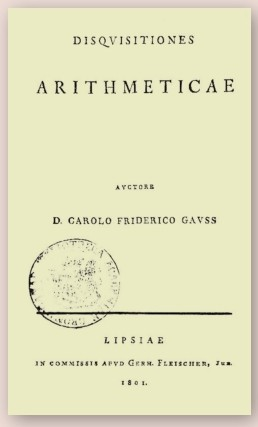
《算术研究》一书中引入了取模运算的概念。
寻找等价类
《算术研究》一书中描述了取模运算。其实，这种运算并不是全新的——人类早已经在这本书出版之前数世纪就用这种方法读时钟了（见对页）。但是，高斯发展了一种数字同余的方式。这里，“同余”或多或少有相等的意味，而且意义重大。
形状和尺寸
考察事物的形状，我们能很容易理解同余的含义。在数学中，所有的正方形被看作是相似的。也就是说，它们虽然尺寸大小和摆放方位不同，但有相同的形状。比如说，一个底边水平放置的正方形可以旋转得到一个直角顶点朝上的菱形。一个小的正方形和一个大的相似，虽然它们不是全等的。两个正方形如果有相同的边长，即使摆放的方位不同也是全等的。当考察这些图形时，很容易分辨哪些正方形是相似的，哪些是全等的。而一个正方形的尺寸和方位能够转化为一串带着系数和变量的数学符号（见第108页：向量和矩阵）。用这种方式可以处理各种事物，而不仅仅是图形，进而取模运算能用于分辨所有事物的同余与否。
现实生活中的应用
高斯应用取模运算解决了许多非常艰深的问题。其实，取模运算还是比较容易理解的。它被应用于很多方面，如美国邮政编码、条形码以及保护网络连接安全的软件系统。
钟表上的数学
也许你没有意识到，你正是运用取模运算看钟表认时间的。时间表达法有12小时制和24小时制两种方法。数字显示式时钟常用24小时制，但言谈中我们一般使用12小时制。（这里，我们假设交谈的另一方已经知道话题谈论的是上午还是下午。）两种时制下的时间转换，只要按12取模。比如，下午1点就是13点整，因为13除以12的余数正是1。下午2点就是14点整（14除以12的余数就是2）。同样的，我们加减时间也要按12取模。比如，上午9点两人约定10小时后见面，那么你知道那是下午7点见面。因为9+10=19，而19除以12的余数是7。
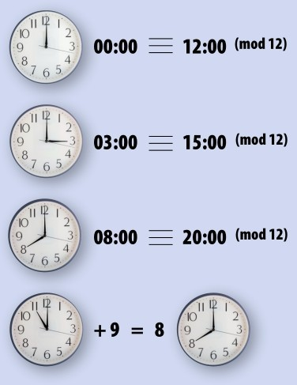
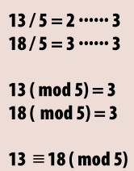
一个简单的例子是13和18按5取模同余。你可以换一种方式检验，两个数做差，得数一定是5或5的倍数。
求余
取模运算是除法的最简单形式。式子中无须分号或小数；只是去计算一个整数是另一个的多少倍，进而得到余数。这里的除数被称为模数，这个词由拉丁文“measuring”（测量）演变而来。因此，取模运算的过程其实也是看一个数如何用模数来量度的过程。
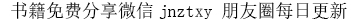
奇数与偶数
让我们看一些例子。先从简单的模数2开始。我们已经知道任何偶数都能被2整除，而奇数除以2的余数是1。因此，任何一个偶数按2取模后余0。“modulo”这个词的意思是“除以模数”，一般简写作“mod”。所 以，8=0(mod2)且15 926=0(mod2)。于是，我们说8与15 926按2取模后相等（同余），记作8≡15 926(mod2)。这里的恒等号“≡”意味着同余关系，即8与15 926属于同一个数类：偶数集。对于奇数我们也可以做类似的分析。因为9除以2得商为4余数为1，所以， 9=1(mod2)。当我们用一个较大的奇数，比如28 765，除以2时，余数仍然是1。由此，我们知道9与28 765按2取模后同余，记作9≡28 765(mod2)。这些数构成一个不同于偶数集合的数类，即奇数集。
简单的运算
不要认为模2运算并不能告知我们太多的信息——至少不如以10为基数的内容丰富（见第130页：二进制与其他进制）。同样的，由模1运算可以得到整数集合。每一个整数都是1的倍数，即每个整数除以1得到的余数为0。因此，所有整数按1取模后同余。也许这个结果并不令人多么震惊，但是它用简单的形式很好地诠释了取模运算的过程。
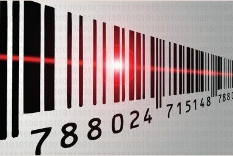
条形码是一列数字的图形表达。简单的取模运算可以用于检验条形码扫描器是否正确地读取了代码。如果校验一致,则表明识别成功，即由该有效扫描行正确地译码，停止识别过程；否则继续对有效扫描行进行解译，如果所有的扫描行都不能正确译码，则返回错误信息。
大数的取模运算
较大数的取模运算更加有趣，因为运算结果会产生更多的等价类。这些等价类恰有模数这么多个。比如，做模10运算，我们可能得到10种不同的余数0、1、2、3、4、5、6、7、8、9，进而，又分成10个类，分别记作[0]、[1]、[2]、[3]、[4]、[5]、[6]、[7]、[8]和[9]；按25取模则可能得到从0到24共25种不同的余数，即有25个类，等等。所有数字在做取模运算时，有相同余数的数字归为一类。例如，27与53按13取模后同余，因为它们除以13得到的余数都是1。它们同余的关系也可以用做差的方式验证：53-27=26，差26是模数13的2倍。事实上，模13同余的两个数做差后，结果都是13的整数倍。数27和53按13取模，在数1所在的类[1]里。我们用1作为代表，是因为1是这个类里最小的数。按13取模把所有正整数分成13个类。
POSTNET条形码
美国邮件上印着的条码是POSTNET条形码，由美国邮政局印制。条形码中大部分条码代表的是邮件目的地的ZIP代码。如右图所示，每个数字都可以用5条长短不一但宽度一致的条码表示。这种编码技术使得邮政服务对邮件按目的地分拣处理的工序能够完全自动化。条形码最后一组条码代表的数字并不是ZIP代码中的一个数，而是验证码，计算机用其检验之前ZIP代码读取是否正确。计算机先把条形码中间代表ZIP代码的9个数码相加，再用和按10取模取余数运算，最后用10减去这个余数。如果这个余数与验证码一致，则说明ZIP码被正确解译出来了。若不一致，则需要重新扫描解码。请问下方的条形码是否解码正确呢？
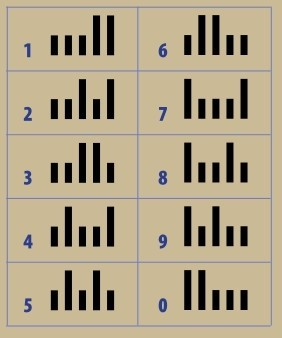
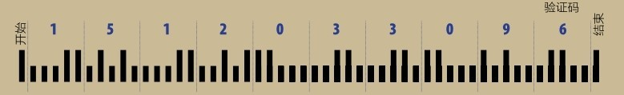
负整数的取模运算
正整数的取模运算是比较直接的，而负整数的取模运算相对需要费些脑力。原因在于余数不能为负。因此，-7按5取模后并不等于-2，而是等于3。处理正数的取模运算时，我们需要寻找模数（5）的最大整数倍数，该值不得大于最初给定的正数。因此，我们得到的余数是非负的。类似的，处理负数的取模运算时，我们需要寻找模数的最小整数倍数，使得乘积的绝对值大于给定负数的绝对值。因5×（-2）=-10，且10>7，所 以，-7按5取模后余数为3。这种取模方式使得相应的等价类看起来有些古怪。比如，-7≡8(mod5)。直观上令人迷惑，但是，8和-7按5取模后有相同的余数3。
取模运算被用于网络安全防控。
模运算加密
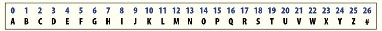
秘钥矩阵 =
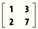
解密矩阵 =
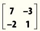
明文“MATH”
明文中字母两两一组，成对编译: MA TH = (12, 0) 和 (19, 7)
加密字母“MA”为
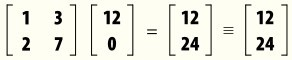
(mod 27)加密字母“TH”为
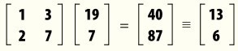
(mod 27)明文“MATH”加密后编译为密文“MYNG”。
解密字母“MY”为
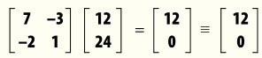
(mod 27) 即知明文为“MA”解密字母“NG”为
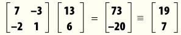
(mod 27) 即知明文为“TH”利用模27运算，我们能加密由26个字母和1个空格符#组成的所有词串。一个词先被数字编码，再通过一个矩阵加密（矩阵乘法运算见第109页）。最后，计算结果进行模27运算后，对照数字和字母符号的对应表编译回词串形式。此时的密文就很难破译了。通过一个解密矩阵，我们亦能从密文找到之前的明文。
模运算
把所有数按组分成各个等价类有什么好处呢？实际上，分成等价类后计算会更简便，因为从两个等价类中挑选出来的任何数对，它们进行加（或减或乘）运算后的结果一定在一个等价类中。例如， 7≡11(mod4)及5≡9(mod4)。7和11属于3所在的等价类[3]，而5和9属于1所在的等价类[1]。当把等价类[3]中的数与等价类[1]中的数进行求和运算时，得数是4的倍数，所以属于0所在的等价类[0] （3+1=4，而4是模4运算下[0]中的元素）。我们可以验证一下：7+5=12，11+9=20，而12和20都是4的倍数，所以都是[0]中的元素。不妨尝试别的数对，结果都将是4的倍数，即属于[0]。而对于减法，可以验证[3]-[1]=[2]，即差值总是模4运算下2的倍数。与此类似，当把等价类[3]中的数与等价类[1]中的数相乘时，得数总是模4运算下3的倍数，读者可以自行计算检验。
费马小定理
法国数学家皮埃尔·德·费马因费马大定理而蜚声于世。其实，他还有一个关于素数验证的小定理，同样知名。定理指出，任何与素数p互质的正整数a，其p次幂ap与a自身关于模p运算同余。换言之，ap-a恰为p的倍数。比如，23-2=6。用取模运算的语言表达就是6≡3（mod3）。这种检验素数的方法很强大，但是并不完善，有极少的一些数满足这种检验条件，但是却并不是素数，这类数称作卡马克尔数。最小的卡马克尔数是561。
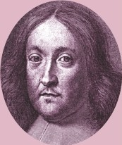
皮埃尔·德·费马是17世纪一位具有神秘色彩的数学家。
ap≡a(mod p)
参见：
▶信息论，第172页
原理
下面是取模运算下两数同余的一些例子。
14≡26(mod12)
14÷12=1......2
26÷12=2......2
27≡9(mod3)
27÷3=9......0
9÷3=3......0
116≡17(mod11)
116÷11=10......6
17÷11=1......6